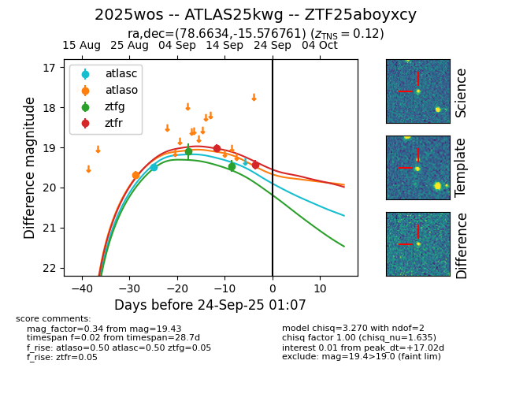
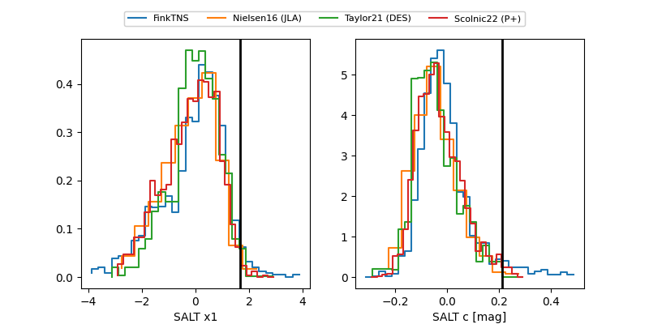

FINK: ZTF25aboyxcy
Lasair: ZTF25aboyxcy
ALeRCE: ZTF25aboyxcy
TNS: 2025wos
YSE: 2025wos
ZTF25aboyxcy (ztf,fink)
2025wos (tns,yse)
ATLAS25kwg (atlas)
equatorial (ra, dec) = (78.6634,-15.57676)
galactic (l, b) = (216.7710,-28.28247)


last atlasc=19.49, atlaso=19.68, ztfg=19.46, ztfr=19.43
1 atlasc, 1 atlaso, 2 ztfg, 2 ztfr detections